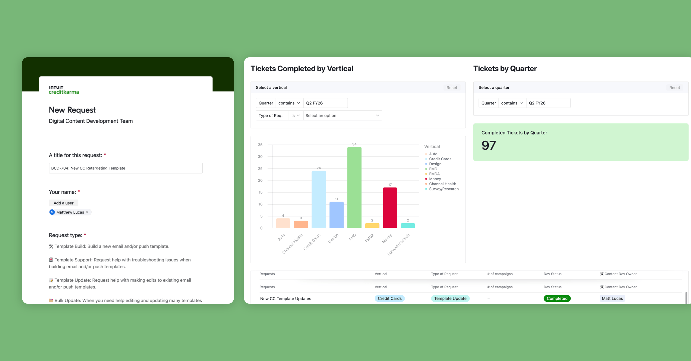
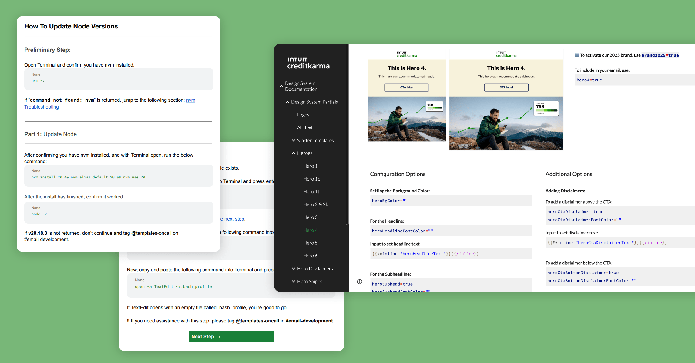
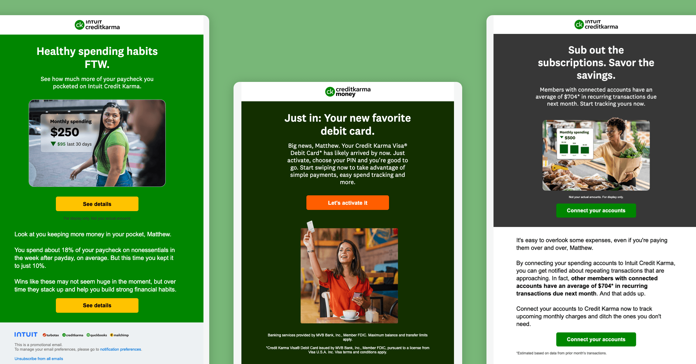

<article>
<header>
<small>Case Study</small>
<h1>Building an Internal Service a Marketing Org Actually Trusted</h1>
<p>August 2024 – March 2026</p>
</header>

<section>
<h2>Intro</h2>

<p>When I joined Credit Karma's Growth Technology team in August 2024, the team I was joining already existed on paper. In practice, it was mostly dormant. It was supposed to be the place marketers went when they needed production work done, but most of them weren't going there. They were doing the work themselves, wrestling with a process built for developers and losing hours to it.</p>

<p>This is a story about how that changed, and what it actually takes to get an organization to adopt an internal service.</p>
</section>

<section>
<h2>What I Was Walking Into</h2>

<p>The production infrastructure was genuinely sophisticated. Everything was built in code, versioned, and committed to GitHub through a proper development workflow. Great for maintainability. The problem was that every routine request also meant wrangling Terminal, GPG keys, npm installs, and pull requests. That's a lot to ask of someone whose actual job is audience segmentation and campaign strategy, not dependency management.</p>

<p>The team I joined was meant to take that burden off their plates. But it hadn't established itself as a resource anyone could count on. Marketers didn't know what the team did, how to request something, or what they'd get back. Without that clarity, most people just kept doing it themselves.</p>

<p>Adoption was sitting at around 10%.</p>
</section>

<section>
<h2>What I Did</h2>

<h3>Defined the service</h3>

<p>The first thing I did was get clear on what we were actually offering. I put together a team overview deck: what we did, what we didn't, how to submit a request, and what to expect once you did.</p>

<p>The service covered six categories (template builds, template updates, template support, new module development, bulk updates, and design troubleshooting), each with a defined SLA.</p>

<p>Naming what we did, and what we didn't, mattered more than it sounds. It gave marketers a mental model for when to come to us, and it gave the team something concrete to hold itself accountable to.</p>

<h3>Built a request system</h3>

<p>There was already a loose intake and tracking process in Airtable when I arrived. The foundation was there, but it was being used in a way that was hard to track and harder to report on quarter over quarter.</p>

<p>So I enhanced what existed rather than rebuilding it: better data fields and a cleaner request form, so marketers could submit a structured request specifying the type of work, the vertical, the priority, and the due date they needed. A separate dashboard tracked tickets completed by vertical, commit volume by quarter, and average turnaround.</p>

<p>By Q4 FY25, we completed 51 requests in a single quarter, saved marketers an estimated 75 hours, and held an average turnaround of 2 days.</p>
</section>



<section>
<h2>Wrote documentation that did the teaching</h2>

<p>One of the quieter ways I built trust with the org was through documentation. Not the kind that gets written once and goes stale, but accurately maintained, user-tested, step-by-step guides written for the person following them in real time.</p>

<p>I wrote a setup guide for new template authors covering GitHub account creation, Personal Access Token setup, GPG key generation for signed commits, and local environment configuration. I wrote a Node version update guide with a four-part walkthrough, escalation paths baked in at every step, and an appendix for edge cases.</p>

<p>This wasn't documentation for its own sake. It cut the volume of support requests we fielded, it let more people self-serve, and it signaled to the org that we were a team that thought carefully about their experience. I also overhauled the design system documentation on our internal Google Sites in Q4 FY25 with richer code samples, clearer configuration options, and better examples. The result was a measurable, month-over-month drop in Slack support requests.</p>
</section>



<section>
<h2>Brought AI into the build process</h2>

<p>In August 2025, I gave an internal lunch and learn on streamlining email and push builds with AI. It wasn't a theoretical talk; it was about what I'd actually built and what the numbers looked like.</p>

<p>Before any of this, a net new template took 60 to 90 minutes to build, end to end. A lot of manual work, a lot of repetition, a lot of opportunities to make a mistake.</p>

<p>I focused on three pain points:</p>

<p><strong>Searching a large codebase for code.</strong> I built a custom Gemini Gem that generated an entire suite of reusable code snippets, which could be invoked during the build instead of digging around for the right block.</p>

<p><strong>Repetitive manual tasks like formatting copy and working with directories.</strong> I used Gemini's Coding Partner Gem to write invocable bash functions that automated the most repetitive parts of the build: setting up directories, formatting copy out of Google Docs, and cloning existing campaigns.</p>

<p><strong>Syntax errors, typos, and off-brand elements slipping through.</strong> As an early adopter, I set up Cursor with custom Commands and Project Rules to act as both a coding assistant and an inline QA layer, automatically checking spelling, color parameter validity, URL formatting, and syntax as part of the build.</p>

<p><strong>The result:</strong> builds that used to take an hour or more now took around 18 to 20 minutes. A 70% reduction. Faster turnaround for marketers, more capacity for the team.</p>

<p>Read more about the process <a href="ai-driven-production-system" target="_blank">here</a>.</p>
</section>

<section>
<h2>The Outcome</h2>

<p>When I took on this work, about 10% of the marketing org was using the team for their production needs. By the time I left, that number was 65%.</p>

<p>That shift came from working two fronts at once. For the marketers who wanted to build their own, I leaned into enablement: the documentation, the AI tooling, hands-on support to get them productive without a developer in the loop for every campaign. For the ones who didn't want to build and were hesitant to hand it off, often because of past bad experiences, I earned the trust back the slow way, through consistent, reliable delivery.</p>

<p>It didn't happen because we pushed harder. It happened because we built something worth using: a clearly defined service, a request process people could rely on, documentation that taught, faster builds, and a team that showed up and did good work.</p>

<p>The number I'm proudest of isn't the 70% build time reduction or the 75 hours saved in a quarter. It's the 65%. That's the one that tells you whether the org trusted us enough to actually change how they worked.</p>

<p>They did.</p>
</section>


</article>

{% include footer.html %}